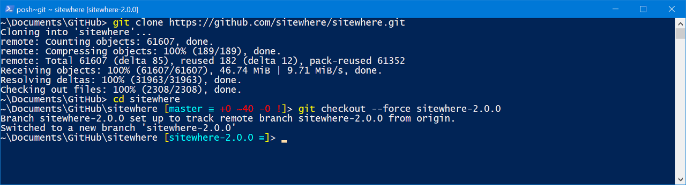
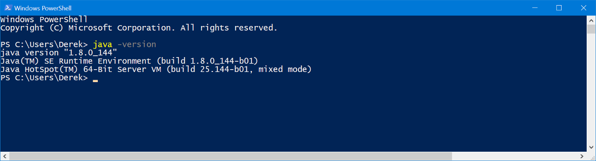
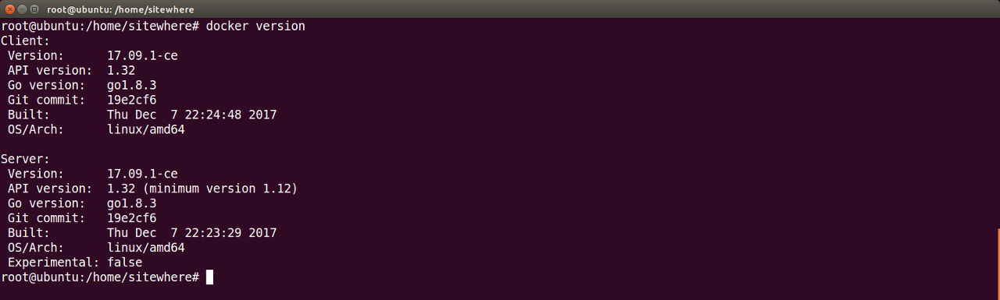
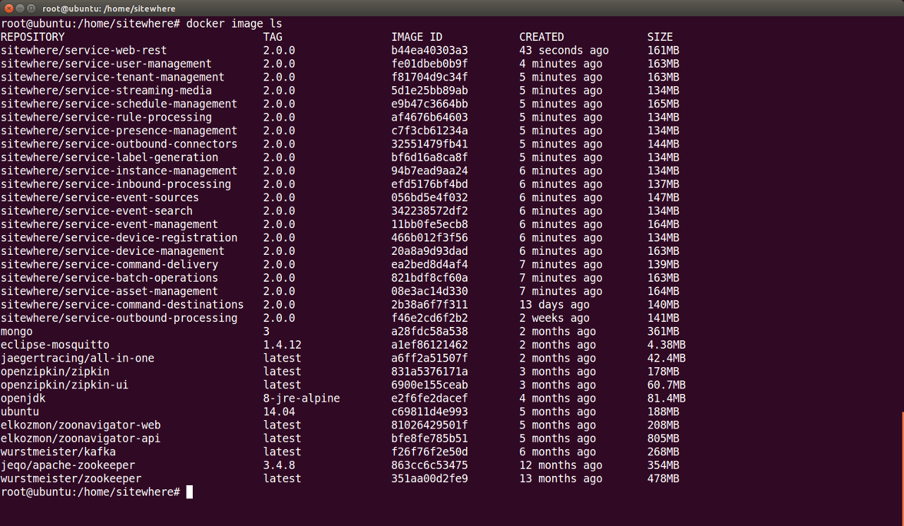

SiteWhere Development Guide¶
This guide provides information intended for developers interested in building SiteWhere components from source code. It provides details about downloading the source code, installing the required build tools, then building Docker images that can be used to deploy an instance.
Accessing Source Code on GitHub¶
The source code for SiteWhere is available on GitHub at the following location:
The repository includes source code as well as issue tracking and other aspects of the development ecosystem.
Branch Structure for Repository¶
Source code checked in to the master branch is always from the latest released version of SiteWhere. Each release is tagged and may be accessed by downloading an archive from the releases page or by cloning the repository and checking out the branch corresponding to the release. The branch for the upcoming SiteWhere 2.0 release is available at the location below:
New functionality is always developed in a separate branch and is eventually merged to master as part of the release cycle.
Pulling Source Code From GitHub¶
In order to work with the code, it will need to be cloned from GitHub onto your local machine. The following link covers a few options for installing a Git client for accesing the repository:
With a Git client installed, start by cloning the SiteWhere core repository. If using the command line client you can execute the following commands to clone the repository and change to the current branch:
git clone https://github.com/sitewhere/sitewhere.git
cd sitewhere
git checkout --force sitewhere-2.0.rc1
The result of the commands should look similar to the output below:
Building from Source¶
SiteWhere includes build scripts that make it easy to build deployable artifacts from the source code. Before building the code, there are a couple of tools that must be installed.
Install Java 8¶
All of the core source code is written in Java, so a Java compiler is required. Recent versions of SiteWhere use features of Java 8, so the JDK or JRE must be 1.8 or above.
Once installed, the version can be verified as shown below:
Install Docker Engine¶
SiteWhere 2.0 uses Docker as the core deployment model, so the deployment artifacts from the build process are Docker images. In order to have a local repository and APIs available for the build scripts to interact with, install a local copy of Docker Engine as explained below:
Verify that Docker Engine has been installed successfully by running the command below:
Configure the Docker daemon is to listen on TCP port 2375. This is the default API port, but most installations do not enable the port by default. An example of the required update for Ubuntu 16.04 can be found here.
Execute Gradle Build Script¶
The root folder of the source code contains a Gradle build script (build.gradle) that compiles the Java code, packages it into Docker images, then pushes the images to a Docker repository. By default, the Gradle script will attempt to push the images to a repository running on localhost. Information for another repository can be added as an override by adding the following lines the gradle.properties (or ~/.gradle on Unix) file in your default user directory:
dockerProtocol=tcp
dockerHostname=192.168.171.100
dockerPort=2375
dockerRepository=docker.io
SiteWhere includes Gradle Wrapper artifacts, so that there is no need to install Gradle independently. To build all of the core libraries, package the microservices into Docker images and push them into your local repository, execute the following command.
gradlew clean dockerImage
The first time the build executes will take significantly longer since Gradle must download all of the dependencies and cache them for later use. When the build script completes, execute the following command to view the list of Docker images which should now include images for all of the SiteWhere microservices:
Creating Debug Images¶
In addition to the standard microservice images, the Gradle build may be parameterized to generate debug images which expose a port for remote Java debugging. In order to generate debug images, execute the following command:
gradlew clean dockerImage -Pdebug
The debug images use a version identifier prefixed with debug- to prevent confusing them with non-debug images. Note that there is a separate SiteWhere recipe for running the debug Docker images since the debug port for each microservice must be remapped to a different port. Using the debug images allows you to connect from a remote debugger (such as the one in Eclipse) and set breakpoints in the running microservices.
Next Steps¶
Now that Docker images have been generated for the microservices, follow the steps in the deployment guide to use SiteWhere recipes that assemble the microservices into a working instance.